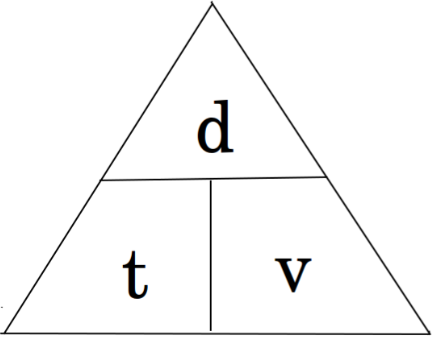

|
Metodología
|
Aprendizaje basado en la indagación: Enfoque STEAM (Ciencia,
Tecnología, Ingeniería, Arte y Matemáticas).
Experimento físico con sensor bluetooth y conexión a celular
mediante aplicación de joystick: en función de la
metodología STEAM vinculado con robótica se emplearán
elementos de ARDUINO para sesión de la clase de física de
10mo grado de educación secundaria.
Docente de la disciplina de Física junto al Docente de
Tecnología Educativa del Centro de Estudios desarrollarán un
carrito con elementos de Arduino que servirá como recurso
didáctico implementado para la demostración del Movimiento
Rectilíneo Uniforme.
Tras conocer conceptos teóricos sobre el MRU (en sesiones
previas) se aplicará el Carrito Arduino, donde los docentes
explicarán su funcionamiento y dinámicas a implementar para
demostrarlo.
Los estudiantes implementan el recurso proporcionado por los
docentes, a través de la siguiente dinámica:
-
Docente con apoyo de cinta métrica y marcador trazará
puntos de 1, 2,3,4,5...m los cuales servirán como puntos
de referencia para calcular: las variables de Distancia y
tiempo, en donde la velocidad tendrá un valor constante.
-
A partir de un punto de partida los estudiantes pondrán en
marcha el carro midiendo el tiempo y observando la
distancia recorrida, datos que servirán de insumo para que
ellos realicen los respectivos cálculos usando las
fórmulas.
|
|
Temporalidad
|
Duración 180 min
|
| Campos formativoss |
Contenido:
Movimiento rectilíneo uniforme (MRU)
|
Procesos de Desarrollo y Aprendizaje
- .Desarrollo cognitivo
- Aprendizaje experimental
- Desarrollo de habilidades matemáticas
|
|
Lenguajes
|
Arduino
|
| Saberes y pensamiento científico |
Partiendo desde la observación se realiza la descripción de
lo comprendido, obteniendo la experimentación controlada por
los involucrados en el proceso de mediación escolar
concluyendo con el razonamiento lógico y modelización del
proyecto a desarrollar.
|
| Ética, naturaleza y Sociedades |
En la exploración del contenido MRU desde las perspectivas
éticas, naturales y sociales, se promueve una comprensión
más amplia de su impacto en diferentes ámbitos, así como una
reflexión sobre nuestras responsabilidades éticas y
ambientales en relación con el movimiento del entorno.
|
| De lo humano y lo comunitario |
Se concibe una comprensión más profunda de su influencia en
la vida diaria y en la estructura social
|
|
Ejes articuladores (que se pueden integrar al proyecto) o
|
El desarrollo de habilidades como la observación, la
formulación de hipótesis, el diseño experimental y el
análisis crítico de datos para comprender el movimiento
desde una perspectiva científica.
|
|
Orientaciones
|
Secuencia de Actividades - Fase 1
|
- Introducción al tema
-
Uso de conocimientos previos del tema en desarrollo.
|
En primer lugar, se introduce el contenido y se realiza una
exploración de conocimientos ante el nuevo contenido a
partir de una lluvia de ideas, considerando el respeto ante
las opiniones de sus compañeros.
El movimiento rectilíneo uniforme (M.R.U.)
describe el desplazamiento de un objeto en una sola
dirección con una velocidad y tiempo constante en una
determinada distancia.
Características del MRU
- rayectoria recta
- Velocidad constante (uniforme)
- Aceleración nula (Valor constante)
- Dirección constante
Las fórmulas del MRU
contemplan tres incógnitas: Velocidad constante (V),
Distancia (d) y Tiempo (t). Para resolver las fórmulas del
movimiento rectilíneo uniforme se debe convertir las
unidades al Sistema Internacional (S.I.) siendo las
siguientes para cada factor:
|
Velocidad
|
Distancia
|
Tiempo
|
| metros por segundo (m/s) |
metros (m) |
segundos (s) |
| v = d / t |
d = v . t |
t = d / v |

Situaciones de la vida cotidiana que implican el MRU
Todas las mañanas corro por la playa diez kilómetros de
recorrido recto, y tardo 1 hora. Quiero mejorar mi velocidad
para jugar una carrera contra mi competidor, que puede
correr a 12 kilómetros por hora. ¿Cuánto debo tardar en
hacer mi recorrido habitual para lograr la velocidad de mi
competidor?
Velocidad: 12 km/h
Distancia: 10 km
10 km / 12 km/h = 0.83 h = 50 minutos
R:
Debo terminar el recorrido en 50 minutos para ser tan rápido
como mi competidor.
|
|
Orientaciones
|
Fase 2
|
- Diseño de la investigación
- Desarrollo de la indagación
|
Los estudiantes deberán considerar las fórmulas y teorías
estudiadas para presentar ejemplos prácticos de la vida
cotidiana y demostrar el MRU según su entorno.
Luego, se organizarán en equipos de 5 integrantes por
afinidad para llevar a cabo la exploración, del
funcionamiento del recurso didáctico (Carrito Arduino)
proporcionado por los docentes.
|
|
Orientaciones
|
Fase 3
|
- Análisis de la información investigada
-
Organización y estructuración de las respuestas a las
preguntas específicas de indagación
|
Los estudiantes analizan y deberán dar una breve descripción
de los materiales, dispositivos y recursos necesarios para
efectuar el proceso de demostración del MRU.
El docente refuerza lo dicho por los estudiantes y explica
la importancia de integrar robótica para fines demostrativos
en el contenido. Lo cual será de una manera práctica,
dinámica y atractiva
|
|
Orientaciones
|
Fase 4
|
- Presentación de los resultados de indagación
- Aplicación
|
El docente de Tecnología Educativa explica el funcionamiento
del carrito y como manipularlo para que cada equipo haga sus
debidas prácticas, observaciones y mediciones.
Los estudiantes hacen las pruebas pertinentes en un área
designada para asegurar que el carrito funcione eficazmente,
posterior registran datos como el tiempo, distancia y
velocidad recorrida para analizar la información obtenida y
verificar si el carro cumple con las características
mencionadas para adaptarlo al contenido. Recopilan datos y
posteriormente los analizan mediante la aplicación de las
fórmulas estudiadas.
|
|
Orientaciones
|
Fase 5
|
- Evaluación y reflexión de la experiencia.
-
Identificación de los logros y dificultades.
Retroalimentación
|
Se concluye con la discusión respetuosa de cada uno de los
resultados obtenidos en los equipos para comparar los
resultados obtenidos a través de la observación y
mediciones.
Además, comparten la experiencia vivida al integrar de
manera innovadora robótica a sus clases.
Los estudiantes relacionan el enfoque STEAM con el proyecto
realizado, los beneficios que representa y los aprendizajes
significativos durante la mediación escolar.
|
|
Materiales y Recursos
|
Estrategias de Evaluación
|
|
Kit de piezas para la construcción del carro, fuente de
alimentación, cables de conexión, cinta métrica, marcador,
celular, cronómetro, hojas de papel y lápiz de grafito para
los apuntes de los cálculos.
|
Interdisciplinariedad
Contextualización
Desarrollo de habilidades científicas
Ciudadanía y sostenibilidad
|